맨 위가 확정 톤(잉크 블랙 + 보라)이에요. 키키 알림 알약의 룩앤필(흰 캡슐·픽셀 얼굴·회색 칩·갈무리 픽셀 글꼴)과 깨발랄한 색으로 크루네를 다시 그렸어요. 이미지 생성으로 만든 시안이라 글자나 아이콘에 작은 어긋남이 있을 수 있어요. 구조(B 타일·접힘·4탭)는 그대로예요.
결정이 필요한 CTA 단추(「1안으로 갈게」·보내기)와 중요한 글자(「확인 필요」·「골라서 확인」)만 보라예요. 탭 메뉴·뒤로가기·선택된 「전체」 칩 같은 일반 UI는 잉크 블랙이에요. 바탕은 따뜻한 미색, 확인 필요 타일은 진한 버터 노랑이에요.
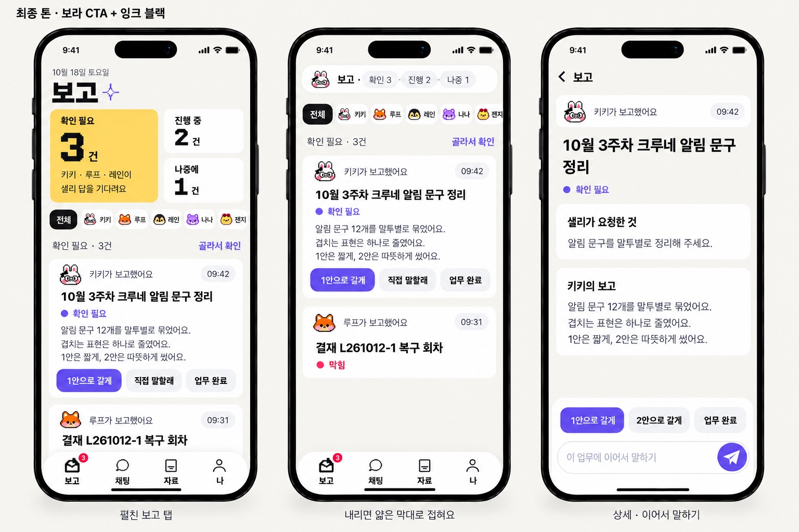
바로 앞 판(역할이 반대였던 M1)
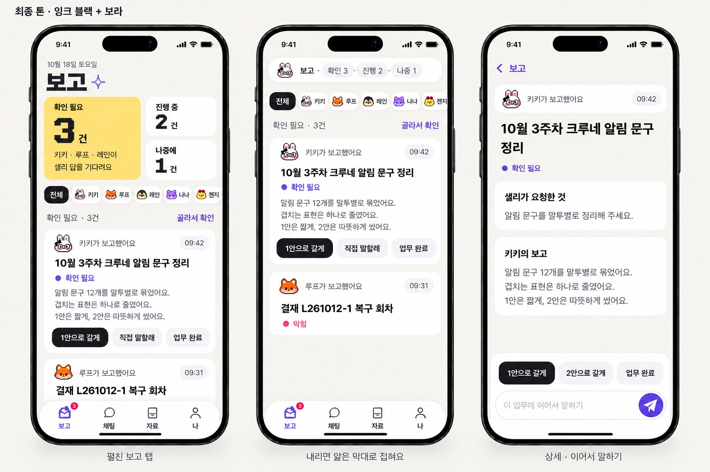
연한 노랑이 푸른 회색 바탕에 묻히던 문제를 고쳤어요. 노랑은 진하게, 바탕은 노랑과 어울리는 쪽으로 다시 맞췄어요. 구조·종이비행기·픽셀 반짝이는 그대로예요.
바탕을 따뜻한 미색으로 바꿔 진한 버터 노랑과 한 계열로 묶었어요. 보라 단추가 또렷하게 떠요.
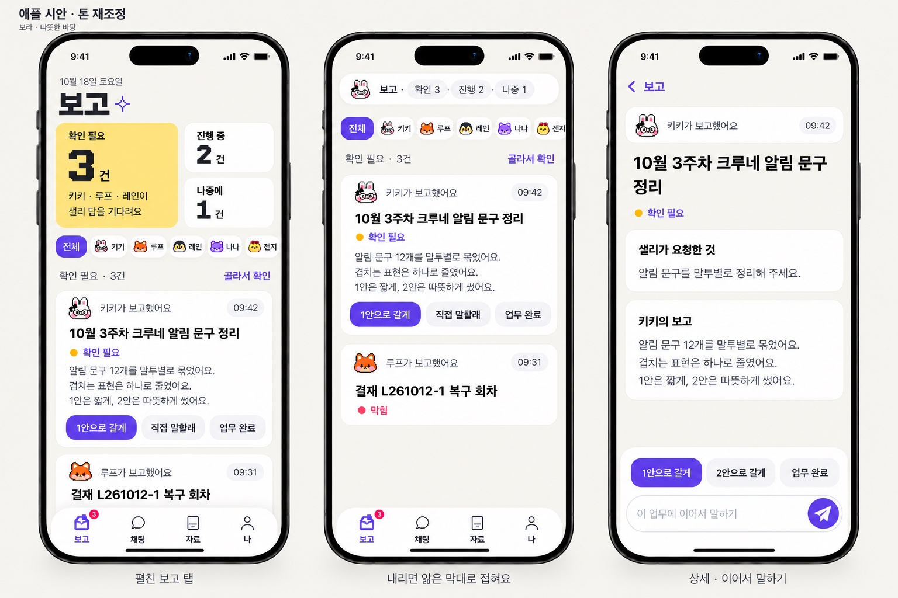
단추는 코발트와 보라 중간 색이에요. 확인 필요 타일을 짙은 인디고로 바꾸고 숫자 「3」만 노랑으로 띄워 대비가 가장 커요.
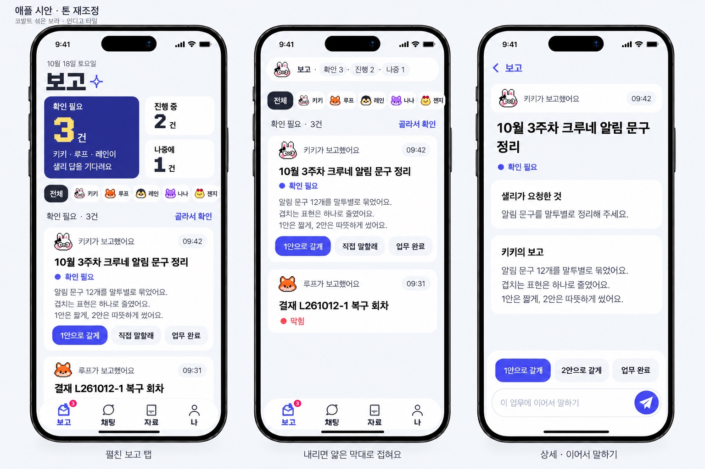
누르는 단추는 보라, 링크·뒤로·선택된 크루 칩은 코발트로 나눴어요. (첫 화면 탭 「자료」가 「차료」로 잘못 그려졌어요. 이미지 생성의 글자 실수라 앱에서는 생기지 않아요.)
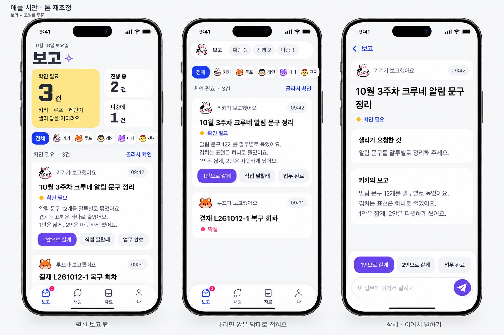
애플 시안은 그대로 두고 세 가지만 바꿨어요. 주 단추 색, 보내기 아이콘(토스처럼 종이비행기), 아주 작은 깨발랄 포인트(제목 옆 픽셀 반짝이)예요. 초록은 「진행 중」, 빨강은 「막힘」과 뜻이 겹쳐서 후보에서 뺐어요.
가장 차분하고 고급스러워요. 노랑 타일과 크루 얼굴이 색을 맡아요.
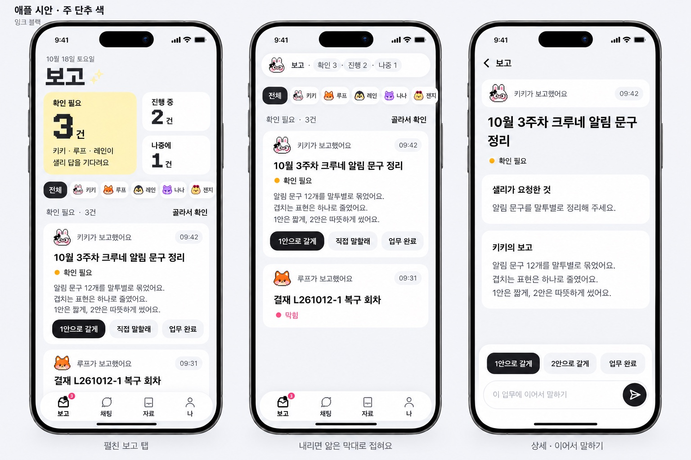
가장 깨발랄해요. 다만 「막힘」 표시도 분홍빛이라, 고르시면 막힘은 빨강으로 따로 떼야 해요.
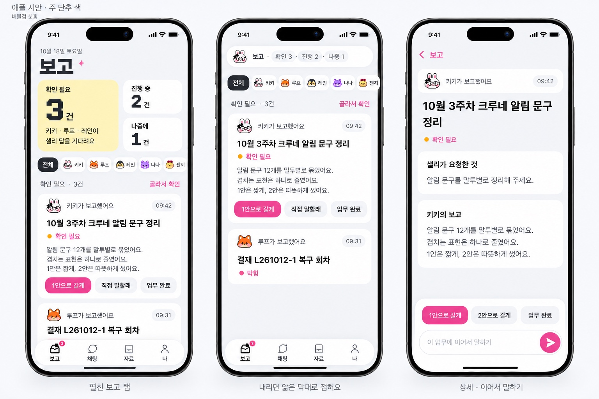
파랑보다 크루네답고 분홍보다 차분해요. 나나(보라 고양이) 색과 이어져요.
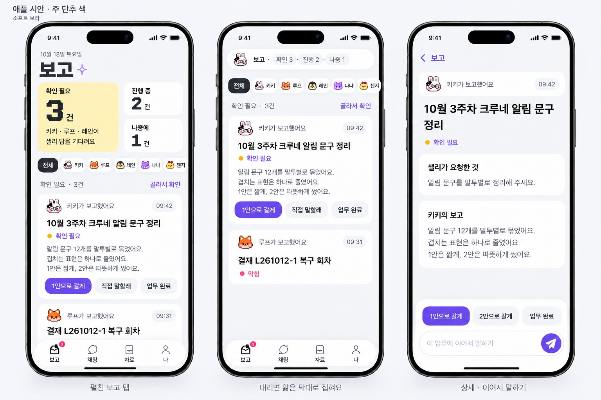
진한 깨발랄 판이 질린다고 하셔서 힘을 많이 뺐어요. 픽셀 글꼴은 큰 제목 「보고」·탭 이름·큰 숫자에만 남기고, 외곽선·도트·낙서는 걷었어요. 색은 연한 노랑(확인 필요)과 파랑 단추 하나만 써요. 알약은 원래 키키 알약처럼 얇은 회색 테두리예요.
연회색 바탕에 흰 카드를 묶어 넣은 iOS 기본 앱 같은 차분함이에요. 상태는 작은 점과 글자로 보여 줘요.
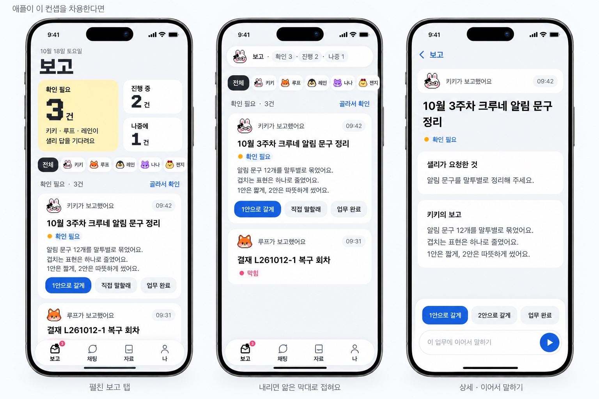
큰 흰 카드, 큰 숫자, 카드마다 행동 하나만 둬요. 크루 거르기는 얼굴 아이콘 줄로 바꿨어요.
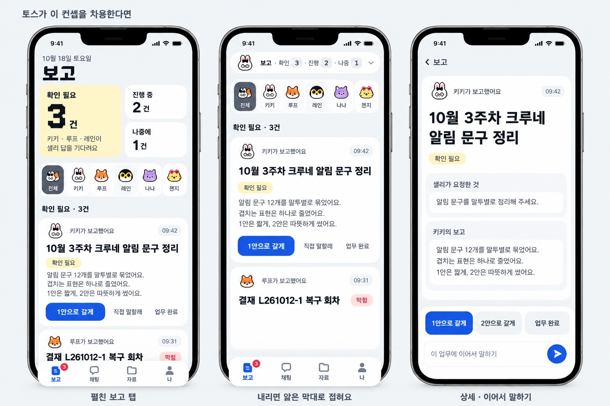
왼쪽은 처음 연 화면이에요. 노랑 「확인 필요 3건」 타일이 주인공이에요. 오른쪽은 목록을 내린 화면이에요. 타일이 위쪽 알약 막대 「보고 · 확인 3 · 진행 2 · 나중 1」로 접혀요.
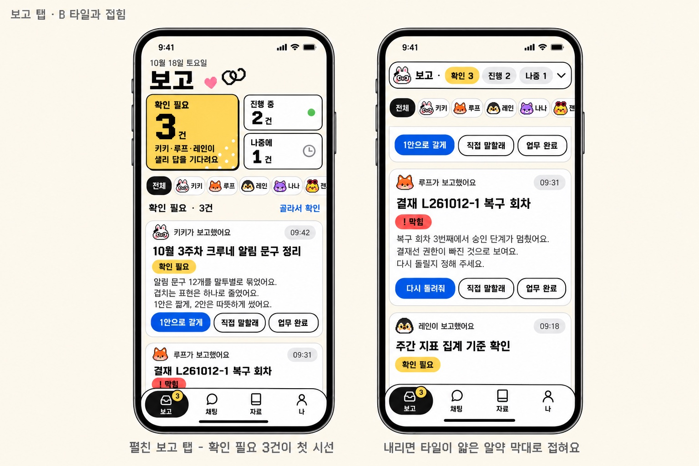
상세 화면 아래쪽에는 결정 단추와 「이 업무에 이어서 말하기」가 함께 붙어 있어요. 채팅방 말풍선 모양은 그대로 두고, 위에 이 업무 알약을 달았어요.
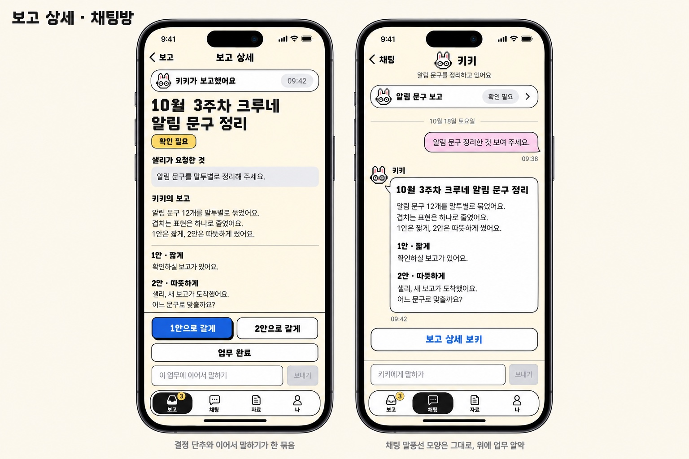
크루 상태는 알약 칩(노랑 확인 필요·빨강 막힘·초록 진행 중)으로 보여요. 다크 모드에서도 색이 뜻하는 바는 같아요.
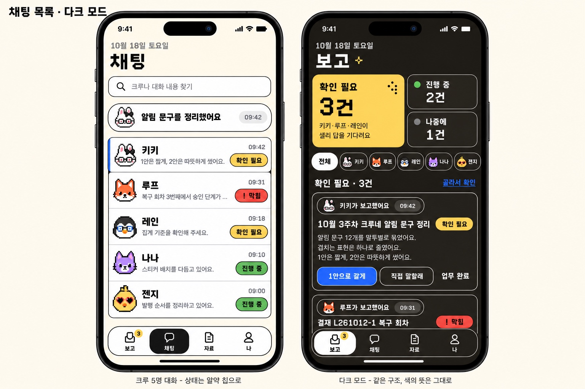
색 9개와 그 뜻, 갈무리 글꼴 크기 단계(44·33·22·11), 부품, 픽셀 크루 얼굴을 모았어요. 앱을 만들 때 이 시트를 기준으로 삼아요.
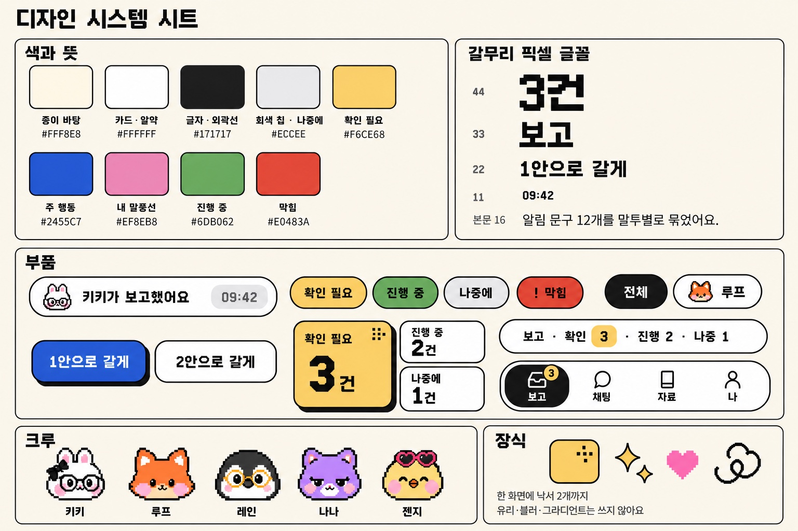
| 색 | 쓰는 곳 |
|---|---|
| 종이 #FFF8E8 | 화면 바탕 |
| 버터 노랑 #F6CE68 | 확인 필요(큰 타일·배지) |
| 코발트 #2455C7 | 주 행동 단추 하나·링크 |
| 버블검 분홍 #EF8EB8 | 내 말풍선(연하게)·작은 하트 |
| 잎 초록 #6DB062 | 진행 중 |
| 사과 빨강 #E0483A | 막힘(「!」와 함께, 작은 칩만) |
| 잉크 #171717 | 글자·외곽선·선택된 탭 |
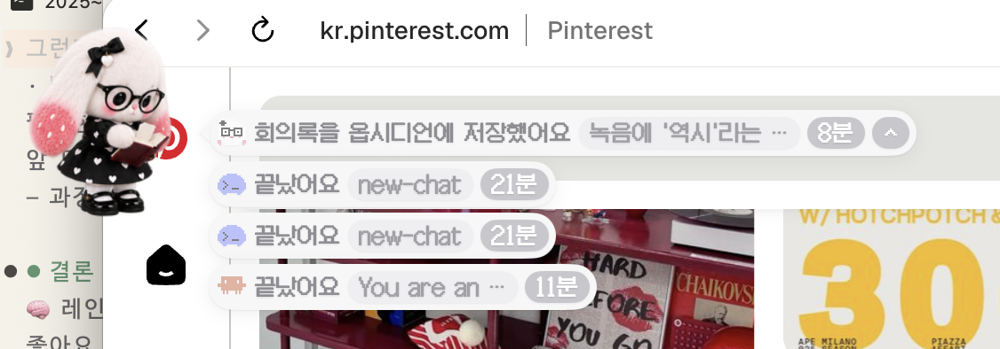
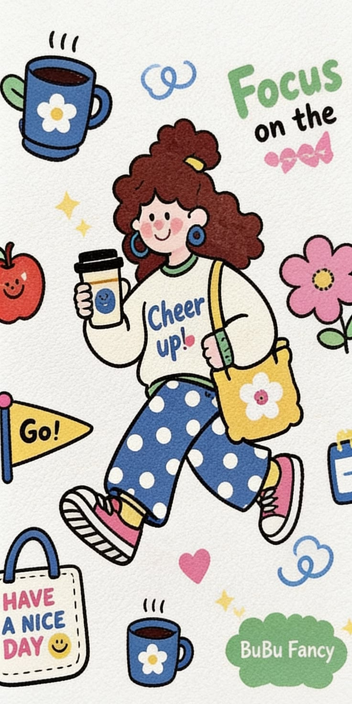